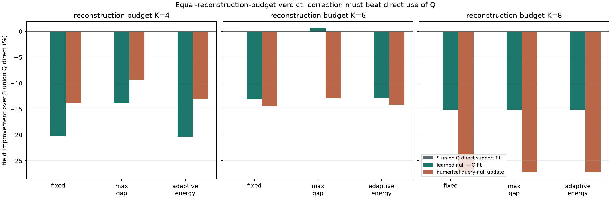
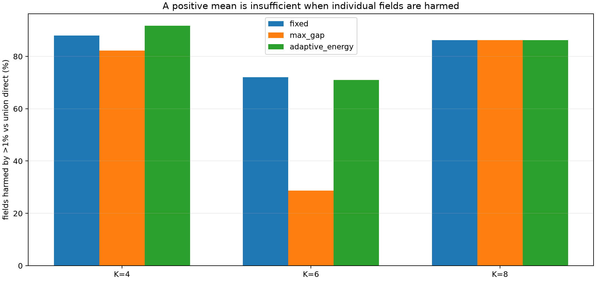

K−1 个 support views
只负责初始 physics lift、Residual/Absolute experts 和 support-fit。
不读取 Q_fit 或 Q_audit。回答最朴素也最致命的问题：同样让一个新视角进入推理时，用它标定零空间修正，是否真的比把它直接加入三维重建更好？
PILOT_ONLY_CURRENT_CHECKPOINT_PATH_FAILS，下一步要么重训后锁定新测试集，要么转向更贴何远哲主线的 operator warm-start NeRIF。
只负责初始 physics lift、Residual/Absolute experts 和 support-fit。
不读取 Q_fit 或 Q_audit。同一个视角分别进入 S∪Q direct、learned alpha 和 numerical null update。
在 support 和 query 选择前就冻结，完全不参与模型、alpha、λ 或方法选择。
因此实际采集数是 K+1，不偷换成总硬件预算 K。表中百分比先跨 3 个模型种子按体场汇总，再让五个来源 split 等权。负数表示落后于同预算 S∪Q direct。
“完整性校验通过”只表示行数、互斥 mask、零空间泄漏、checksum 和统计合同正确；它不等于科学方法通过。


training-mask-matched 审计表明，FBP-lift operator 仍失败；ridge-FNO 在 K=4/6/8 相对强 ridge 改善约 21.54% / 19.68% / 16.91%，三档 development gates 通过。
边界：仍是线性 synthetic；查看完整 v3a 路线。
carry continuation-Adam + restart cosine 是 240-epoch validation 冠军；v3e 又完成参数、FLOPs-v1、MPS 时间/内存与 time-to-target。
下一步：等待 geometry Go 并补 matched error–compute curves；允许功能 pilot，比较结论继续关闭。
K=6 max-gap 下 learned correction 相对 direct 的均值约 +0.56%，但 CI 跨 0、p10 约 −5.9%、28.7% 体场受损。
启发：相机布局/VOI 值得研究，但必须以风险分布和真实安装约束为核心。
最大 support leakage 仍约 2.3e−9，但三维场常明显更差。这是一个清楚、可展示、可写进本科论文的机制性反例。
边界：当前仍是 8×16×16 线性 synthetic forward。